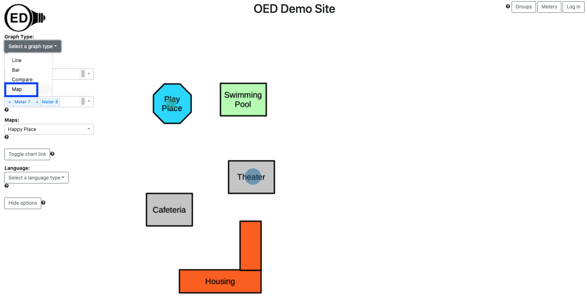
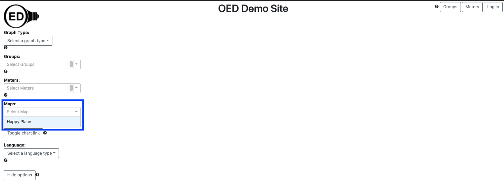
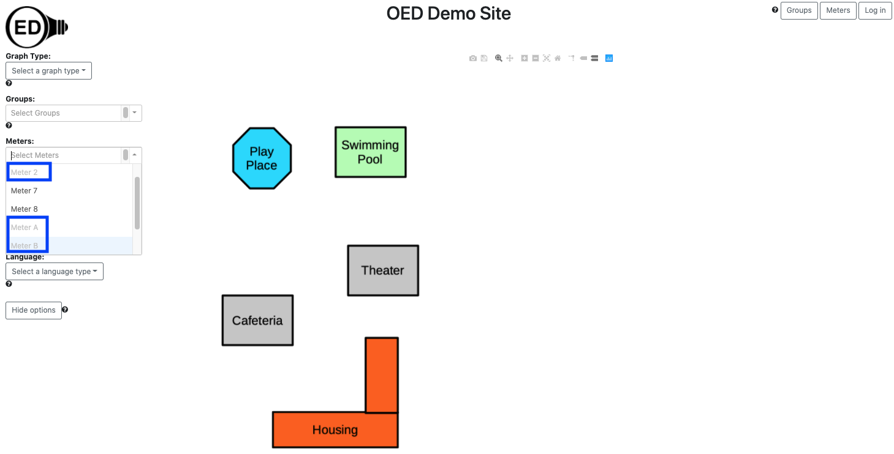

OED Documentation
Map Graphic
Version V0.7.0
The latest version of this page is V1.0.0.
Documentation overview
User documentation
Information
Meters/Groups
Other Features
Admin documentation
Documentation versions for this page
Overview
The map graphic gives a spacial representation of energy usage. Typically a simplified map of buildings and any important landmarks is used as the image for a map. A circle is placed on the map for each graphed item where the size of the circle represents its usage. An OED site can have as many maps as it wishes. To get this graphic, you click the "Map" choice (highlighted with a blue box in the next figure). This is a simple map with a few buildings where the usage is given for "Play Place" and "Theater". As the size of the circles show, the "Theater" used significantly more energy than "Play Place". In the following figure, Meter 7 is for "Play Place" and Meter 8 is for "Theater". This is consistent with what is shown in compare graphic help page where the same meters are used and Meter 8 is shown to use a lot more energy. 
Usage
When you go to the map page, you first need to select the map you want to use. You do this by clicking the dropdown menu for "Maps:" and clicking the one you want (highlighted with a blue box in the next figure). This is very similar to what you do for a "Meter:" or "Group:". Even if there is only one map you need to select it (as in the following figure). Once you click on a map, it will appear in the graphic. If you already have meters selected that can be shown on the map then they will immediately appear. (See below for more on selecting meters.) 
You select the meters to graph in the usual way. (See Limitations below about graphing groups.) OED will display each meter as an individual circle as shown in the figure above. In some cases the meter cannot be placed on the graph. This happens when its GPS coordinates do not lie within the map. Note that a meter without GPS coordinates provided by the admin of the site can never be placed on any map. To let the user know when a meter cannot be placed on the current map, its name is grayed out. These meters cannot be selected. In the following figure, Meters 2, A and B are grayed out (highlighted with blue boxes) since they cannot be shown on the map. Meters 7 and 8 look normal since they can be shown on the map and selected. 
If you selected Meter 7 and Meter 8 then you would see the graphic at the top of this page.
If a site has multiple maps that lie in different geographical locations, then a meter grayed out on one map might be displayable on another. Also, if you are on a different graphic type and are displaying a meter that cannot be shown on the map then it will not appear on the map and be grayed out on the "Meters:" list. If you return to another graphic, the meter will appear again since it can be shown.
Details
Map circle colors
OED consistently uses the same color for a meter/group across all graphic representations. The map graph may seem to have a lighter shade of color than the other graphics. This is due to making the circle partly transparent so you can see the underlying map image. If you look at the color the rectangle that pops up when you hover on the graph you will see it is the same as the color used for this item in other graphics.
Map circle size
The size of a circle is based on its area (not the diameter) so the circle area scales with usage. This was chosen since a study indicated that area is the better choice for user perception.
OED makes the circle size be from an internally set minimum and maximum size so that it ranges within a set percentage of the map size. Note this has a couple of important implications:
- The size of circles can change as you select new items to place on the map. This only happens if a new item has greater usage than any previously chosen item. This occurs because OED makes the item with the highest usage have the maximum size allowed and scales all the other items appropriately. This allows circles to be as large as possible.
- The minimum size of the circle means that items with low usage do not become so small that they cannot be seen. However, it does mean that items with small circles will not accurately represent the actual usage. Hovering over a cicle will cause a popup that displays the actual usage.
Limitations
Maps are a new and complex feature added in version 0.7. It was designed to show what they can do and allow people to begin to incorporate them into their sites. There are several current limitations on maps that should be removed shortly.
- Groups. At the current time you cannot place a group on a map. They are not grayed out on the "Groups:" dropdown. Selecting a group will not show it on the map but it will be listed as a selected group. As a result, it will show up on other graphic pages.
- The circle represents the average usage over the last 4 weeks bar shown in the bar graphic for this meter. This means if you change the date range on the line graphic, the bar graphic changes to those dates and the map graphic also changes the circle size. In the future we will allow other time ranges (probably similar to bar graphs).
Format of dates and times
See explanation in line graphics for why data and time format varies with displayed language.